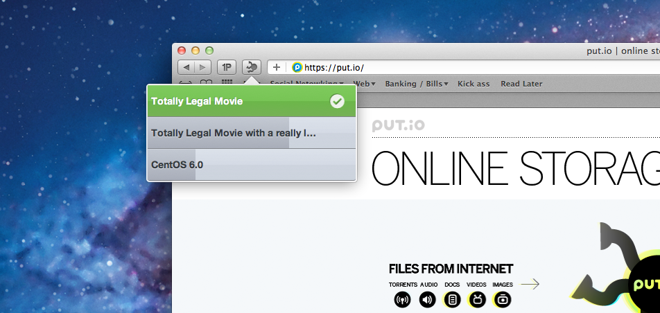

About
This extension allows you to quickly see the torrents you are downloading via the put.io service. This is a side project so I would love feedback and ideas. If you think you can help, please fork the project and do so!

Change Log
- Version 1.1
- When no downloads are present you can now click on "No Active Downloads" and it will open http://put.io
- When a file is downloading you can click on it and will open a link to the transfer page
- When a file has completed downloading (seeding) clicking on it will bring you to the files page on http://put.io
- New: Design changes to user interface
- Fixed: Properly loading javascript and support files
- Fixed: When updating settings or setting for first time, extension auto reloads
- Version 1.0
- Initial release